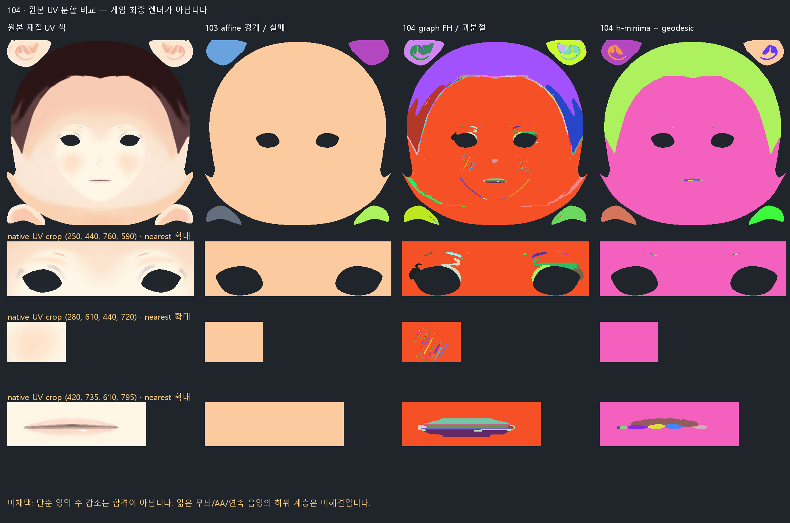
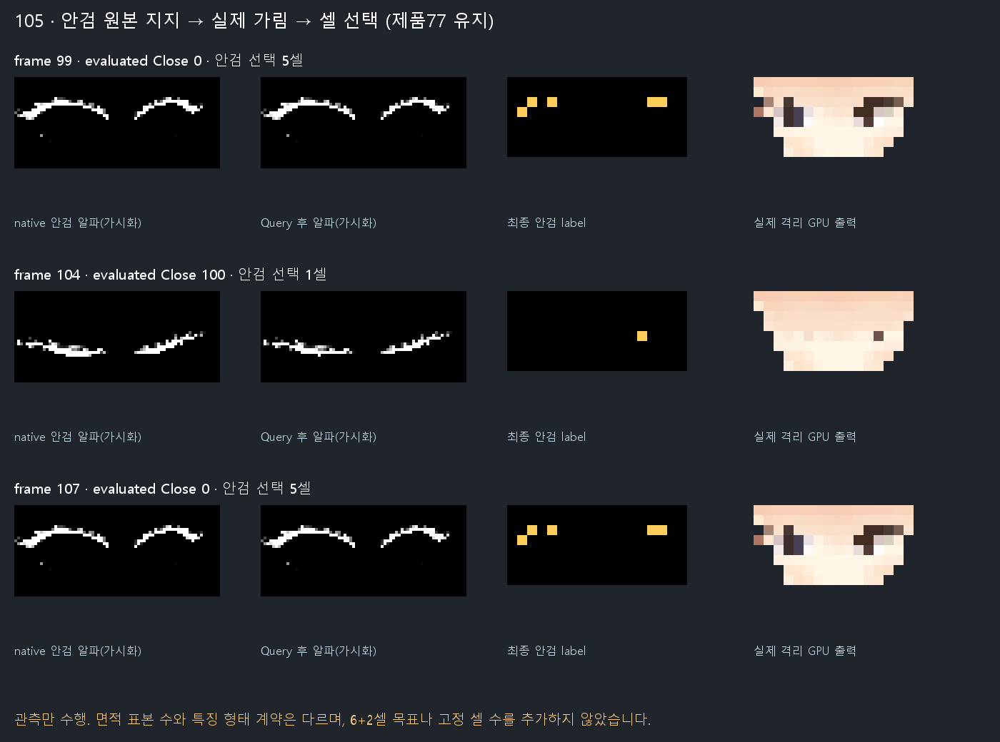
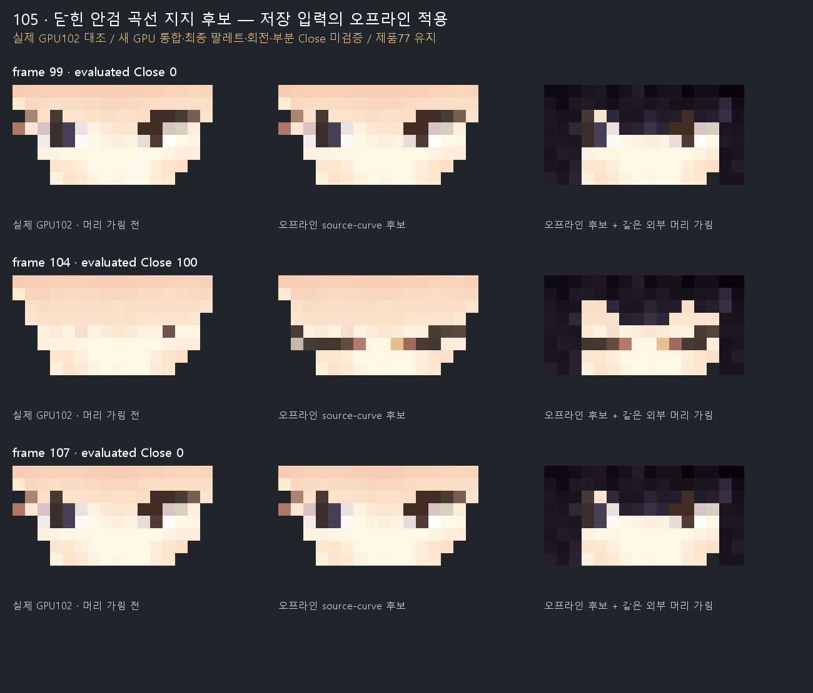
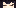

제품77 유지. 이 페이지는 완성된 얼굴 팔레트나 런타임 통합 결과가 아닙니다. 원본 RGB·UV·조명·소유권을 바꾸지 않고 실패 원인을 분리했습니다.

색이 다른 영역 표시는 label debug이며 최종 팔레트가 아닙니다. 기존103은 피부와 두피 과병합, FH는681영역/311singleton, h-minima+geodesic은36영역/0singleton이지만 볼의 실제 얇은 칠을 같은 피부 parent에 합칩니다. 안검은 각각200/370영역입니다. 영역 수 감소만으로 채택하지 않았습니다.
근거·정확한 방법·가정 · 실제 좌표·연결성 · L코너 실패 포함

완전 Close: native149표본/알파108.4634 → 실제 피부 가림 후96.7750,26논리셀 지지 → 최종1셀. 같은 프레임 source triangle/UV/변형/Query/Select를 기록했습니다. CPU/GPU864셀 불일치0입니다. 두 실행의 sourceId는 별개이며 6장이 연속 동작이라는 뜻이 아닙니다.

기존 native ring의 등록된 위쪽 chain을 실제 변형·기존 eyeInverse로 투영하고, 같은 셀에 같은 눈의 확정 가시 색소가 있는 곳만 사용합니다. 이 포즈에서는 각각 연결7셀. 셀 수 하드코딩/임의 피부색/가림 무시 없이 원본 sample RGB·depth를 직접 선택합니다. 열림·재개방0변경. 부분 Close/회전/연속성/안검 유한P는 미검증입니다. 열린 eye2의 0.0005px 표본 대조 한계도 그대로 실패로 남겼습니다.
| 실제 GPU102 원배율 | 오프라인 후보 원배율  |
후보·변경셀·source UV/depth 출처 · 직접 변환·대응검사 · 보존·메모리 API · 실제6상태 원시입력
마지막 상태: Edit/dirty31/실제 PlayerSettings 포함46직렬화 내용 동일. 만료된 임시 AssetImporter1개는 unavailable이며47/47 동등성을 주장하지 않습니다. InputSettings 동일 객체22값·장치·옵션·시간·pipeline·globals 복원, RT30→30. 마지막 Unity GetTotalAllocatedMemoryLong +34.42MiB는 physical working set이나 누수 판정이 아닙니다. CUA/Assets import/제품수정/저장/삭제/초기화/강제종료/push0.
재현검사: 이 폴더에서 Python test_archive104_105.py. 게임 동작/미술/모든 모델 일반화 검증은 아닙니다. 최신 알고리즘 위치·미해결은 docs/ai/PIXEL_ALBEDO_20261030.md만 확인합니다.